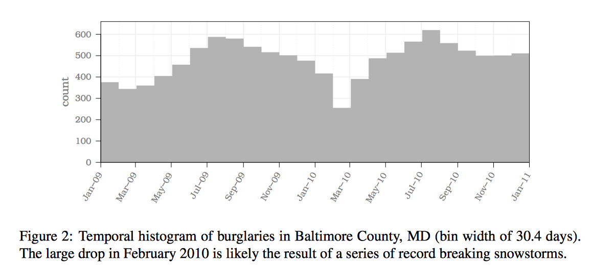
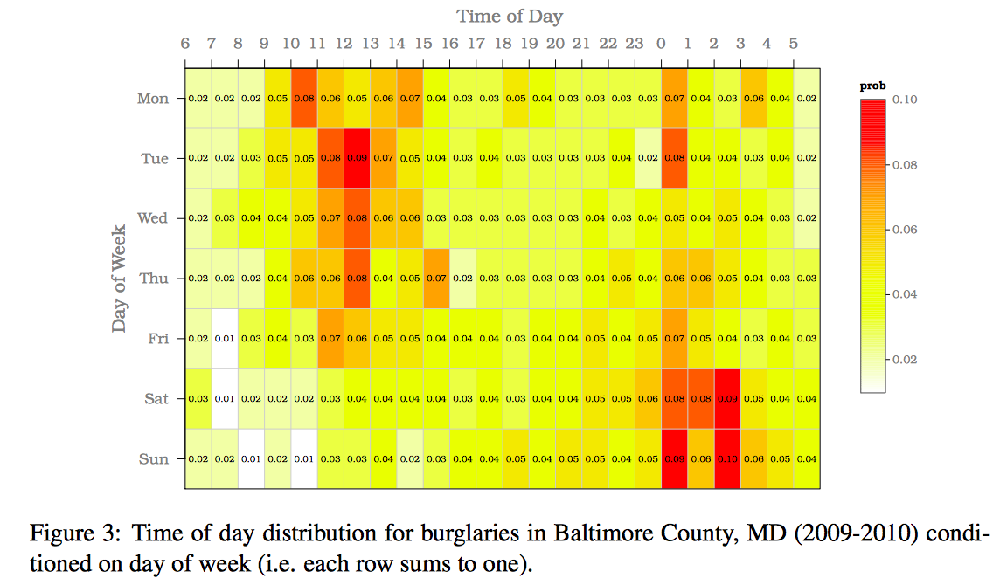

Crime Science 2017-2018
Crime Science?
Scientific method for complex crime problems
- Problem-solving
- Cross-disciplinary (!!)
Criminological-sociological approach
The "Why?" question
Forensic-psychological approach
The "Who?" question
Does this solve the problem right now?
Crime Science approach
How?
When?
Where?
What?
Situational crime prevention
Example: When?
When exactly?
Reich & Porter, 2015
Topics we'll cover
(seminars + lectures + invited speakers)
Soft target terrorism (seminar)
Guest speakers
APPLIED CHALLENGE!!
Contact
Bennett Kleinberg
b.a.r.kleinberg@uva.nl - bkleinberg.net
Isabelle van der Vegt
teaching assistant - iwjvandervegt@gmail.com
made with [reveal.js] slides on [https://github.com/ben-aaron188/reveal_js_slides]